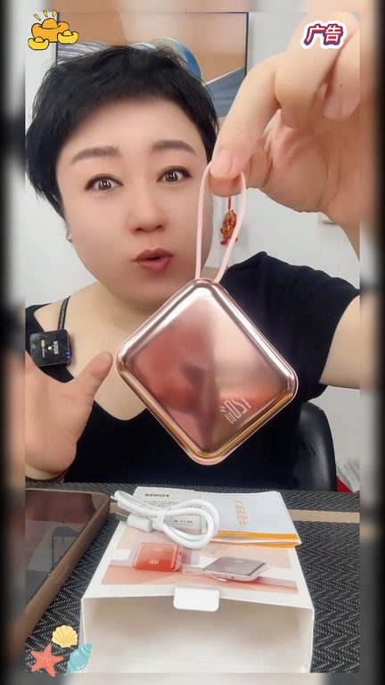
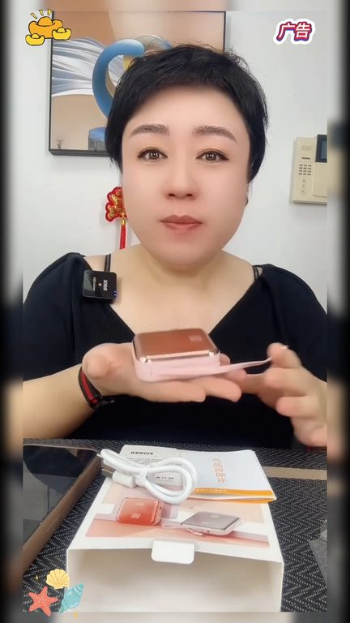
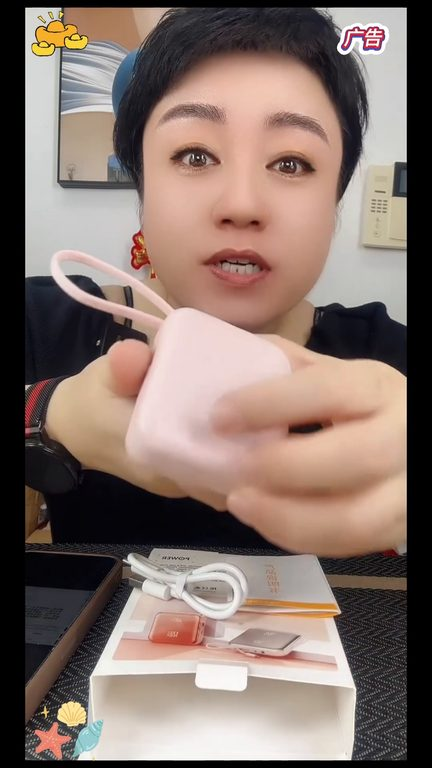
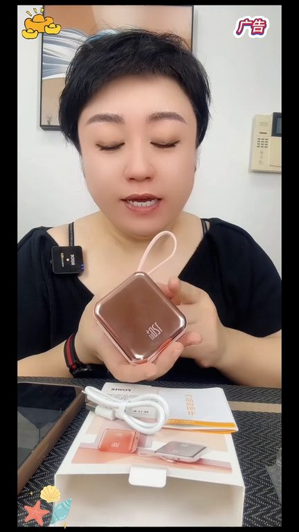

TOP 1 · 代表素材深度拆解
核心放量 稳健
视频为原始素材 HTTPS 链接；点击后加载，建议在网络环境良好时播放。
12.7万素材消耗
2.33%CTR
42.1%类目消耗占比
-0.13pp较类目均值
表现判断
该素材是类目内第 1 名，属于“核心放量”；CTR 低于类目均值。消耗体现承接规模，CTR 体现首屏与定向效率，两项应结合判断，不能仅以单指标下结论。
表达标签
口播三段式证据
开场钩子就这个小充电宝我强烈的怒腿给姐妹们推荐一下的啊这个模仿我都没舍得解因为你们收到了这模仿你先别解你先用我用了好几天了超级超级的好用你别看就如同紙巾大小但是它是2万毫安的你看我自己用的是大砖头的就这么大的捞尘了
中段论证可以退换都可以有运行显用一年之内如果有质量问题只换心不休就这么一小点你就是戴上放包包里非常方便小巧好看又实用好不好看起来吗我超喜欢这小充电宝所以我才给你推荐的以前我也接过充电宝要不就是用着吧品质不大好我这人就是不管啥东西回来必须得试用才能给你们推荐这个我试用好了才给你推荐的而且咱有售后的咱不用担心收到家里你就别急着摸你就给他试用就可以了用完了满意你就留不满意…
结尾转化小巧好看又实用好不好看起来吗我超喜欢这小充电宝所以我才给你推荐的以前我也接过充电宝要不就是用着品质不大好我这人就是不管啥东西回来必须得试用才能给你们推荐这个我试用好了才给你推荐的而且咱有售后的咱不用担心收到家里你就别急着磨你就给它试用就可以了用完了满意你就留不满意咱直接给它远路返回强烈强烈推荐超好看
有效点
- 消耗占比 42.1% 说明具备投放承接能力，但 CTR 较类目均值低 0.13pp
- 口播包含明确到手机制或直播间指令，转化路径较完整
迭代动作
- 重做前 3–5 秒：结果前置、缩短背景铺垫，并把核心人群直接写进首屏字幕
- 视频时长偏长，建议剪出 30–45 秒短版，仅保留钩子、两项证据和一次 CTA
- 复核功效、绝对化及价格稀缺措辞；增加适用边界和效果因人而异提示
合规关注

钩子建立 · 10.5s

场景/问题展开 · 79.5s

卖点证据 · 182.9s

转化收口 · 251.9s
查看完整口播摘要
就这个小充电宝我强烈的怒腿给姐妹们推荐一下的啊这个模仿我都没舍得解因为你们收到了这模仿你先别解你先用我用了好几天了超级超级的好用你别看就如同紙巾大小但是它是2万毫安的你看我自己用的是大砖头的就这么大的捞尘了才1万毫安这2万毫安特别好而且现在好多民航局没有3C标识的都不让带飞机的不让带高铁了这个上面是有3C标识的能不能看见反正上面是有的像我这个上面没有现在登机就登不了了所以说看到我这个视频的姐妹如果你正好需要一个充电宝你就一定要拍一个特别的好看我再给你介绍一下细节它是所有手机都同用的有一个这个插口还有一个这个插口反正我这手机都是可以用的你们看清楚还有一个USB接口比方说平时咱们戴了蓝眼耳机充个电或者说咱们像我这种戴这种手表的也可以拿充电里边选项有颜色选项还有一种就是一个顶配版的一个标配版的我建议姐妹们别插几块钱直接拍顶配版的然后颜色你们自己去选我特别喜欢玫瑰金如果是女生就选玫瑰金如果是男生你们颜色自己就去选就可以了这个小充电宝能充三四四吧一个手机我就用了这样就让我给大家做试验了特别好而且它售后非常有保证收到家里不喜欢或者不满意别接这个这只别给接去可以退换都可以有运行显用一年之内如果有质量问题只换心不休就这么一小点你就是戴上放包包里非常方便小巧好看又实用好不好看起来吗我超喜欢这小充电宝所以我才给你推荐的以前我也接过充电宝要不就是用着吧品质不大好我这人就是不管啥东西回来必须得试用才能给你们推荐这个我试用好了才给你推荐的而且咱有售后的咱不用担心收到家里你就别急着摸你就给他试用就可以了用完了满意你就留不满意咱直接给他远路返回强烈强烈推荐超好看我真是太有眼光了一眼就买到这么好充电宝插上手机直接超级快充因为它是自带两条快充线的出门不需要额外带线也可以充耳机LED智能数显随时检查剩余电量新国标3C认证飞机高铁随便带商家你也太懂我们女生了新出的充电宝好好看啊之前的容量太小不够用这款就刚刚好小体积大容量不仅能给手机充三次还能上飞机高铁自带双快充线听过安卓都能同时充超级快充充电速度尬尬快姐妹们赶紧去好它一个充电宝而已大可不必做得这么精致又烂用姐妹们是个充电宝真的好举虽然小小一个但却有2万毫安的大容量而且还自带苹果和安卓两根数据线超级快充定时吃个饭的时间手机就充满了这里还有显示屏能随时查看剩余多少天量并且还是新国标3C认证的一级高铁充耳机高铁连至高出门的时候都带着真的很方便就这个小充电宝我强烈的怒腿给姐妹们推荐一下的这个模仿我都没舍得解因为你们收到了这个模仿你先别解你先用我用了好几天了超级超级的好用你别看就如同值金大小但是它是2万毫安的你看我自己用的大砖头的就这么大的捞成了才1万毫安这2万毫安特别好而且现在好多民航局没有3C标识的都不让带飞机的也不让带高铁了这个上面是有3C标识的所以说看到我这个视频的姐妹如果你正好需要一个充电宝你就一定要拍一个特别的好看我再给你介绍一下细节它是所有手机都同用的有一个这个插口还有一个这个插口反正我这手机都是可以用能不能看清楚还有一个USB接口比如说平时咱们戴了蓝眼耳机充个电或者说咱们像我这种戴这种手表的也可以拿充电里边选项有颜色选项还有一种就是一个顶配版的一个标配版的我建议姐妹们别插几块钱直接拍顶配版的因为顶配版它里边电信是更好然后颜色你们自己去选我特别喜欢玫瑰金如果是女生就选玫瑰金如果是男生你们颜色自己就去选就可以了这个小充电宝能充三四四吧一个手机我就用了这样就让我给大家做试验了特别好而且它售后非常有保证收到家里不喜欢或者不满意别接这个这只别给接下去可以退换都可以有运行显用一年之内如果有质量问题只换心不休就这么一小点你就是戴上放包包里非常方便小巧好看又实用好不好看起来吗我超喜欢这小充电宝所以我才给你推荐的以前我也接过充电宝要不就是用着品质不大好我这人就是不管啥东西回来必须得试用才能给你们推荐这个我试用好了才给你推荐的而且咱有售后的咱不用担心收到家里你就别急着磨你就给它试用就可以了用完了满意你就留不满意咱直接给它远路返回强烈强烈推荐超好看